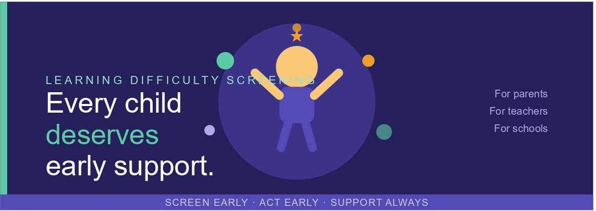

Data Analyst | Turning Data Into Actionable Insights
I am a passionate Data Analyst with a BSc in Mathematics from Universidade da Madeira in Portugal. With expertise in Python, SQL, Excel, Tableau and Power BI. I have completed several professional certifications and multiple hands-on projects that transform complex datasets into actionable insights. My work demonstrates the ability to clean, analyze and visualize data effectively to drive strategic decision-making. I'm actively seeking opportunities to leverage data-driven solutions to solve real-world business problems.

Developed a data-driven educational screening framework to support early identification of potential learning difficulties using academic performance patterns and risk indicators. Conducted statistical analysis and exploratory data analysis (EDA), built a risk scoring framework and designed printable screening questionnaires to support awareness and early educational intervention, particularly in under-resourced communities.
Explored the relationship between music listening habits and mental health conditions using a Kaggle dataset. Investigated demographic distributions, preferred music genres and their impact on self-reported mental health. This end-to-end project demonstrates data cleaning, SQL analysis and interactive visualizations.
Completed a professional job simulation advising a hypothetical social media client. Cleaned, modeled and analyzed 7 datasets to uncover content trends and inform strategic decisions. Prepared comprehensive PowerPoint presentations to communicate key insights to client stakeholders and internal teams.
Created data visualizations for a hypothetical retail client to review revenue data and prepare for future growth. Prepared strategic questions for senior leadership meetings, developed executive-level visual analytics and delivered insights through professional presentations to support data-driven decision making.
Analyzed job market trends across multiple industries in the USA using Excel. This personal project emerged from my own job-hunting experience and explores evolving employment patterns, in-demand skills and industry dynamics. Demonstrates advanced Excel capabilities including data cleaning, pivot tables and dashboard creation.